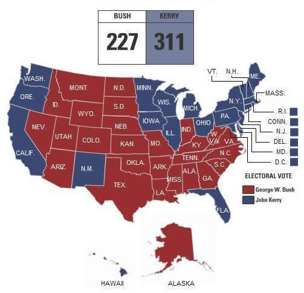

Well, it's finally here. The Presidential Election is tomorrow, and ready or not, it's coming and no one can stop it. I guess I'll take this entry to focus on my endorsements.
I think it's important that everyone share who they are voting for and why. It's refreshing to see the reasons people vote for a particular politician because alot of times opponents of the politician avoid actually talking to their opposition because they want to boil that position down to the basic principles of RIGHT and WRONG. The fact is, no one is RIGHT and no one is WRONG. It's so silly to think that President Bush can represent 100% of the American people in the most appropriate way. It's also asinine to think that Kerry is the answer to the problems Bush poses. This democracy is not perfect. Our political needs should not rest in the hands to two opponents. I think Nader is right, the problem with this election is that Americans really have no choice. It's either one or the other.
It's especially hard, because faced with the last four years, we know something is WRONG. Bush isn't completely right, of course, but as the Bush/Cheney campaign constantly points out, neither is Kerry. Just because Kerry isn't "persistent" as Bush would say, does that mean Bush is RIGHT and Kerry is WRONG? Do the failures in Iraq rest solely on the Republicans and President Bush? These questions cannot be answered, and as voters, it is our responsibility to sort through the bull and pick the best man for the job. I just hope that man realizes, that no matter how the election goes, that he is not there to be a Republican or a Democrat. He's there to do what's right for the voters. All of the voters.
We'll see what happens, right? Anyways, here's my endorsements!
| Kerry / Edwards For President |
||||||||||||||||||||||||||||||||||||||||||||||||||||||||||||||||||||||||||||||||||||||||||||||||||
Yup, you guessed it. I think Bush is an idiot, and I think the direction he's leading out country in is the WRONG direction. There are several things I think Bush has the capability to do within the next four years that make him a very dangerous President for the nation and the world. If you think we're divisive now, just wait: The Supreme Court: Whoever the next President is, he will decide the next Supreme Court Justice. I thought for sure in Bush's first term that at least one of those crusty old conservatives would have hopped off the bench so Bush could secure the seat into the next decade. That didn't happen, and I think maybe the men and women on that bench realize the danger a Bush appointee represents to the nation. We need John Kerry to appoint a moderate who doesn't support a conservative or liberal agenda. We need John Kerry to appoint someone to protect the constitution, and protect the rights we have as Americans under the Constitution. This is by far the most important reason not to re-elect George W. Bush. Iraq and the War on Terror: Bush took the support and sympathy of the entire world to pervert the War on Terror to invade Iraq, a nation that did not attack us on 9/11. Listen carefully to Republican rhetoric. They don't say this specifically, but they want everyone to believe Saddam was a threat when he wasn't. They want Americans to believe the war is going well when it's not. We need John Kerry to refocus and reevaluate our role in the War on Terror. We also need a Commander-in-Chief that understands the mistakes in Iraq and who will work to fix them instead of not being accountable for them. President Bush lacks accountability, he'd rather blame his cabinet and the C.I.A. than take responsibility for his actions. We need a President who is responsible and accountable. We need John Kerry. Fiscal Responsibility: Was it just me, or was did America have a balanced budget before George Bush came in to screw that all up? We're fighting a war, and as nice as tax cuts are, when we are waging an expensive War on Terror and we need to rethink our financial priorities. John Kerry recognizes the need to keep some of Bush's tax cuts, but he also realizes that we need to roll back the tax cuts for the rich so that we can fight a successful and well-funded war. That's why he voted against further funding for the war. In an attempt to be financially responsible, Kerry sent a message to the White House, telling him he would not support a war if it meant deferring the financial burden to the next generation of Americans. Once again, Kerry is more accountable and responsible than President Bush. Who is the better man? Who fought for our nation, even when he disagreed with our motives? John Kerry. Who has served the citizens of the United States longer? Who has more experience in foreign policy? Who can recognize when American needs to be steadfast and when America needs to be accountable? John Kerry. Who's the best man for the job? You guessed it, John Kerry. |
| NO on Amendment 1 Anti-Gay Marriage |
||||||||||||||||||||||||||||||||||||||||||||||||||||||||||||||||||||||||||||||||||||||||||||||||||
I know this is a long shot, but it's worth my vote, and it's worth yours. This amendment says more than you think it does. It puts discrimination into our state constitution and denies same-sex couples more than just marriage equality. It makes it impossible for the state to ever grant same-sex couples any form of civil union benefits.
What kind of precedent does this set? Using the constitution to restrict someone's rights is not only irresponsible, it's barbaric. Our lawmakers know it, but they let politics come into conflict with their responsibility as leaders of this democracy. Even the staunchest conservatives believe that this is wrong. Marriage equality is not danger to the sanctity of marriage. It's only threat is to conservatives and their agenda to legislate morals and values into every American's lives. News flash: That will never happen. America is not a society that will roll back the rights of its citizens. I believe marriage equality will occur in the 21st century, and no conservative can stop it. The truth is there is not danger to the sanctity of marriage, and its definition is not changing. What is changing is that millions of couples will get the legal recognition from the state that their love is just as valuable the love of heterosexuals. There's no reason why I can't visit my partner in the hospital and a straight couple can. There's not reason I shouldn't have the same fiscal privileges with my lover that a heterosexual couple has through the government. No matter how many amendments you put in the constitution, we're not going anywhere. We're your neighbors, your co-workers, and we're your sons and daughters. We've always been here and always will be. Get used to it. |
| Becky Vaughn State Senate |
||||||||||||||||||||||||||||||||||||||||||||||||||||||||||||||||||||||||||||||||||||||||||||||||||
This is more of a personal vendetta, but I hold my State Senator Brian Kemp personally responsible for voting for Senate Resolution 595 and putting Amendment 1 on the ballot. I e-mailed the respected Senator, and he sent me some boxed response about values and all that crap, but he didn't respond to the will of his constituents. I know there are several issues that also would have me at odds w/ Mr. Kemp, but this above all has me seeking his replacement. Ms. Vaughn is a bright woman, and she already has impressive experience at the Capitol in Atlanta. I think she would be more responsive to the voters she represents instead of responding solely to the special interests that govern the actions of Brian Kemp. I want a Senator that has a mind of her own and doesn't fall in line w/ the governor, but instead falls in line w/ the voters he or she represents. |
Denise Majette U.S. Senate |
John Barrow U.S. House |
|||||||||||||||||||||||||||||||||||||||||||||||||||||||||||||||||||||||||||||||||||||||||||||||||
Well, I suppose I could get flak for these. My apprehension that Bush may win the White House makes me very worried about a Senate with a Republican majority. No party should control all branchs of government, there should be a check somewhere, and electing Majette will help establish that. Isn't is appropriate that one Senator is Republican and one is Democrat? Since Republicans refuse to represent all voters, we have to trust a Democrat to pick up the slack. Once again, the two party system fails...so let's hear it for installing someone who won't give Bush a blank check on our future! Alot of GLBT groups have come out against John Barrow, and I can understand this. Faced with the divisive issue of gay marriage, he sided with conservatives in pledging his support for the Federal Marriage Amendment. That is pretty despicable, but what would you have done? Would you play the Republican's game by picking one end of the spectrum just because your opponent occupies the other? I think Barrow realizes that gay marriage does not have popular support, and since he's a Representative from Georgia, he's going to have to vote according to the will of the constituents. If it does come to a head, I think a good letter-writing campaign to help change Mr. Barrow's mind might be in order. Who knows, he'll probably change his mind. Again. |
There are more, I'm sure you know, but that's all I feel strongly about. I'm going to mostly vote Democrat, but I think I may go Republican on the DA. I hear the Democrat is a real ass, but who knows. I may change my mind. I think I might want a little red on my ballot, because unlike my good friend Kyle, I don't think Democrats have all the answers. Just most of them.
I don't care who you're voting for, but whatever you do, pick an issue and VOTE! Educate yourself on the issues, realistically. Don't listen to the pundits, don't even listen to the candidates. There are facts out there, and if you look hard enough, you'll find them. There's something that you're interested in, I'm sure, and there is a candidate that can make it happen for you. If you vote for Bush, you had better have a good reason. Just because he says you're safer with him doesn't mean it's true. I mean, the guy took a vacation a month before 9/11. Educate yourself, and VOTE! There's no excuse. Unless you're stupid, then stay home and suck your thumb.
Nick's Projected Electoral Prediction:
